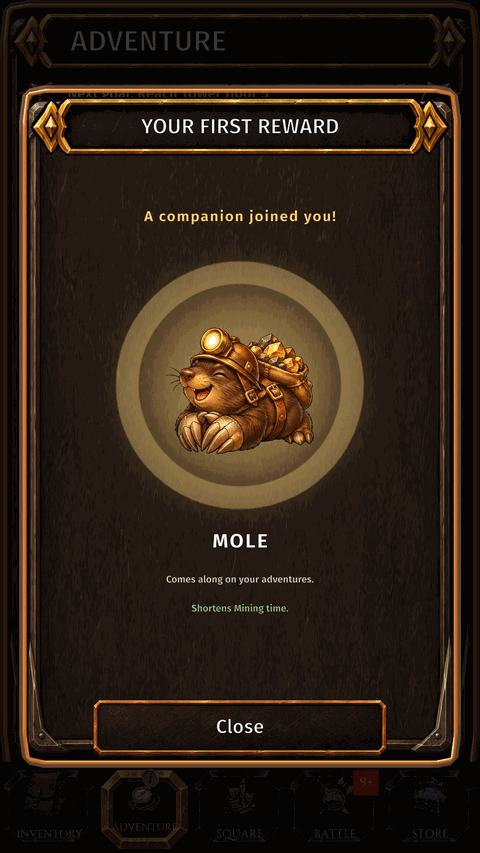
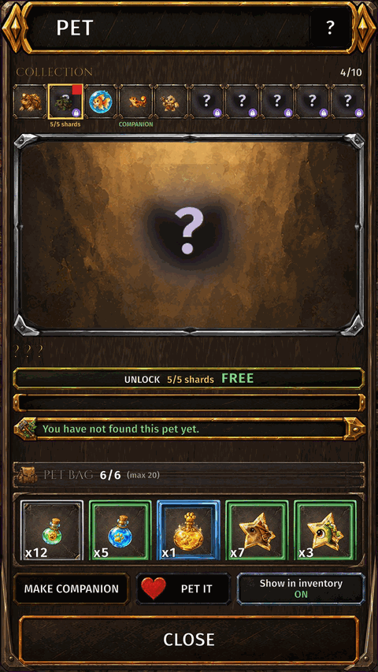

Pets
What it is
Collect pet shards to unlock and evolve pets. A companion pet speeds up its own profession; pets do not fight.
How to get there
- INVENTORY.
- PET (top right of your character).


Pets
| Pet | Helps | Shard | Shards come from |
|---|---|---|---|
 Mole Mole | Mining |  Mole Shard Mole Shard | Obtained from: Pet Box |
 Herb Turtle Herb Turtle | Herbalism |  Herb Turtle Shard Herb Turtle Shard | Obtained from: Pet Box |
 Fish Fish | Fishing |  Fish Shard Fish Shard | Obtained from: Pet Box |
 Salamander Salamander | Smelting |  Salamander Shard Salamander Shard | Obtained from: Pet Box |
 Golem Golem | Blacksmithing |  Golem Shard Golem Shard | Obtained from: Pet Box |
 Hedgehog Hedgehog | Weaponsmith |  Hedgehog Shard Hedgehog Shard | Obtained from: Pet Box |
 Fairy Dragon Fairy Dragon | Alchemy |  Fairy Dragon Shard Fairy Dragon Shard | Obtained from: Pet Box |
 Octopus Octopus | Cooking |  Octopus Shard Octopus Shard | Obtained from: Pet Box |
 Armadillo Armadillo | Armorsmith |  Armadillo Shard Armadillo Shard | Obtained from: Pet Box |
 Jewel Beetle Jewel Beetle | Jewelcrafting |  Jewel Beetle Shard Jewel Beetle Shard | Obtained from: Pet Box |
Guide
- Each pet belongs to one profession. Every pet you own makes work in its own profession faster — you do not need to equip it.
- The higher the pet's level, the bigger the bonus. The panel shows the bonus now and at the next level.
- Pets do not affect combat.
- A pet gains EXP when you gather or craft in its profession.
- Pet EXP potions give EXP at once: tap a potion in the pet bag and use it on the selected pet.
- You can choose one pet as your companion. It is for looks only: every pet you own gives its bonus anyway.
- Pets, pet shards and Pet Boxes are bound to you and cannot be traded.
- Shards also evolve a pet. Each evolution adds a star and raises the pet's level cap.
- When the EXP bar says Evolution needed, the pet cannot level up until it evolves.